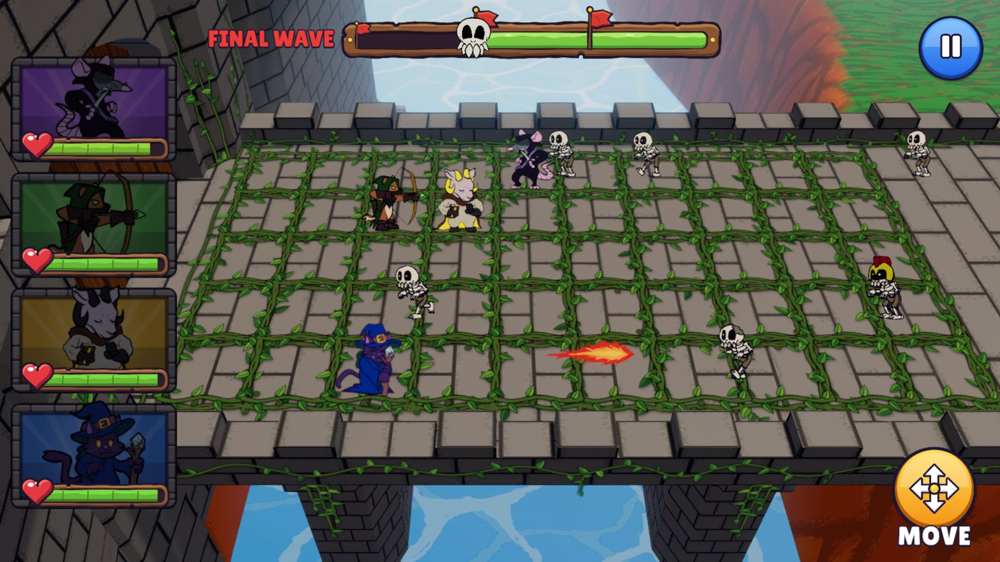
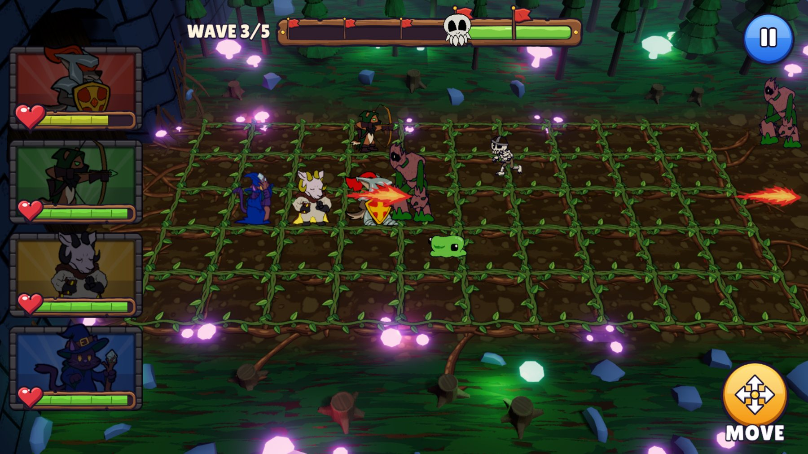

Arcane Keepers
A tower defense game where you command a squad of four heroes, moving and swapping them across a grid to hold off waves of enemies. Made in Unity by Nukasaur Games, a team of 7. I'm the producer, I create all of the lighting, post-processing, and sound effects, and I contribute to level design.

- Role
- Producer / Level Designer
- Engine
- Unity
- Team size
- 7 developers (Nukasaur Games)
- Duration
- Sept 2026 – present (one semester)
- My contributions
- Managed team production and project coordination · all lighting and post-processing · all sound effects · contributed to level design · integrated art assets into the game
Overview
As producer on Arcane Keepers, I kept a 7-person team coordinated and on schedule. I also owned how the game looks and sounds once the art is in: every lighting setup, the post-processing, and every sound effect. On the design side, I contributed to level layouts and brought the art team's assets into the scenes.
The challenge was keeping a busy, grid-based battlefield readable. Lighting had to separate heroes, enemies, and projectiles at a glance while giving each world its own mood.
Design goals
- Units and projectiles readable at a glance
- A distinct lighting mood for each world
- Sound that confirms every hit and action
Lighting each world
Both worlds use the same grid, so lighting carries most of the difference between them. World 1 is a sunlit castle bridge in warm, neutral light. World 2 moves to a night forest, where glowing mushrooms and green fog do the work, and the fireballs and hero outlines still pop against the darker ground.

What I learned
- Plan around dependencies. Mapping who needs what, and when, let our seven-person team integrate work without blocking each other.
- Lighting and sound make combat readable. Keeping both consistent makes fights easier to follow and makes the game feel like one cohesive piece.
- Every change has a cost. I weigh each design change against the core gameplay and what the team can realistically build.
Time spent
At least 5 hours a week, split evenly between design and production management.